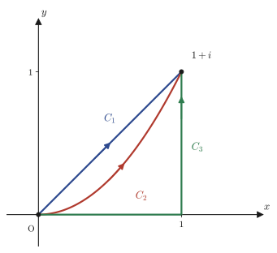

第25章複素積分とコーシーの積分定理
第24章では，複素関数 $f(z)=u(x,y)+iv(x,y)$ が「正則である」（微分可能である）とはどういうことかを調べ，それが実2変数関数 $u,v$ に対するコーシー・リーマンの方程式 $u_x=v_y,\ u_y=-v_x$ という強い制約と同値であることを見た．本章では，いよいよ複素解析学の心臓部——複素積分——に踏み込む．複素数の世界で「積分する」とはどういう計算なのか，それを一言で言えば「実部・虚部に分けてしまえば，高校・微分積分学で慣れ親しんだ2つの実積分（あるいは線積分）の組にすぎない」．計算そのものは難しくない．
本当に驚くべきことは，計算の先に待っている事実の方である．関数 $f(z)=z$ を，原点 $0$ から $1+i$ まで，まっすぐな道でも，弧を描く道でも，鍵型に曲がる道でも，どの道を通っても積分の値は同じ $i$ になる．ところが関数 $f(z)=\bar z$（$z$ の共役）を同じ3本の道に沿って積分すると，今度は道ごとに値が変わってしまう．この違いを生む原因はただ一つ，$f(z)=z$ は正則で，$f(z)=\bar z$ は正則でない，という点だけである．この観察を一般の定理にまで押し上げたものが，本章の主役であるコーシーの積分定理：「$f$ が単純閉曲線 $C$ とその内部 $D$ で正則ならば，$\oint_C f(z)\,dz=0$」である．この定理はグリーンの定理（多変数の微分積分学）とコーシー・リーマンの方程式（第24章）という，読者がすでに手にしている2つの道具を組み合わせるだけで証明できる．そしてこの定理から芋づる式に，経路によらないこと，積分路を自由に変形してよいこと，そして次章の主役であるコーシーの積分公式へとつながる周回積分公式 $\oint_C \dfrac{dz}{z-\alpha}=2\pi i$ までもが導かれる．
- 複素積分 $\displaystyle\int_C f(z)\,dz$ の定義（媒介変数表示と，実部・虚部に分けた2つの実線積分への分解）
- 複素積分の基本性質：線形性，向き反転で符号が変わること，経路の分割，そして評価に使う $ML$ 不等式
- 例題を通じて確認する「正則関数 $f(z)=z$ の積分は経路によらないが，正則でない関数 $f(z)=\bar z$ の積分は経路に依存する」という対比
- 円周 $|z|=r$ 上での $z^n$ の周回積分が $n=-1$ のときだけ特別な値 $2\pi i$ をもつこと，そして対数関数の周回積分が $0$ にならない理由（原点が分岐点であること）
- グリーンの定理（実2変数関数の線積分と重積分を結ぶ定理）の主張と証明
- コーシーの積分定理 $\oint_C f(z)\,dz=0$ の主張と，グリーンの定理＋コーシー・リーマンの方程式による証明
- 系：正則関数の積分は経路によらないこと，およびそれを言い換えた「積分路変形の原理」
- 多重連結領域（穴のあいた領域）へのコーシーの積分定理の拡張と，穴を迂回する橋渡し線分の発想
- 周回積分公式 $\oint_C \dfrac{dz}{z-\alpha}=2\pi i$（$\alpha$ を囲む任意の単純閉曲線 $C$ について）と，部分分数分解を使った計算例
もとにしたノート：望月泰英『数学ノート 複素解析学』 pp. 27–33．
25.1 複素積分の定義と性質
高校・微分積分学で学んだ定積分 $\int_a^b g(x)\,dx$ は，実数直線上の区間 $[a,b]$ に沿って関数を足し集める操作であった．複素関数 $f(z)$ を「積分する」ときは，$z$ が動く区間の代わりに，複素平面上の曲線 $C$ に沿って $f(z)$ を足し集める．曲線は直線とは限らず，弧を描いても鍵型に折れ曲がってもよい．そこでまず，曲線 $C$ を媒介変数（parameter）$t$ で表すところから始める．
定義25.1 複素積分（線積分としての定義）
複素平面上の曲線 $C$ が，実数 $a\le t\le b$ を用いて
$$z(t)=x(t)+iy(t)\qquad(a\le t\le b)$$と媒介変数表示され，$x(t),y(t)$ が区分的に $C^1$ 級（有限個の点を除いて微分可能で，導関数が連続）であるとする．$C$ 上とその近くで連続な複素関数 $f(z)=u(x,y)+iv(x,y)$ に対して，$C$ に沿う $f$ の積分を
$$\int_C f(z)\,dz \;:=\; \int_a^b f\big(z(t)\big)\,z'(t)\,dt,\qquad z'(t)=x'(t)+iy'(t)$$で定義する．右辺は複素数値の関数を実数区間で積分したものだが，これは中身を実部・虚部に分ければ，$u,v$ について高校以来おなじみの実積分（線積分）の組にすぎない．実際，$f(z(t))z'(t)=\big(u+iv\big)\big(x'+iy'\big)=(ux'-vy')+i(uy'+vx')$ なので，
$$\int_C f(z)\,dz=\int_a^b\!\big(ux'-vy'\big)dt \;+\; i\int_a^b\!\big(uy'+vx'\big)dt =\int_C(u\,dx-v\,dy)+i\int_C(u\,dy+v\,dx)$$と書き直せる．最後の式は，$dx=x'(t)dt,\ dy=y'(t)dt$ という置き換え（微分積分学で学ぶ線積分の記法）をしただけである．つまり複素積分とは，実部・虚部それぞれについて計算した2種類の実線積分を，$1$ と $i$ の係数で組み合わせたものである．これから先，複素積分の計算に迷ったら，いつでもこの分解に戻ってよい．
イメージ：$dz=z'(t)\,dt$ は「進む向きと速さ」
$z'(t)$ は媒介変数 $t$ を少し増やしたときに点 $z(t)$ がどちらの向きにどれだけ動くかを表す，複素平面上の「速度ベクトル」である．$f(z(t))z'(t)dt$ は，その瞬間の関数の値 $f(z(t))$ に，進んだ変位 $z'(t)dt$ を複素数として掛けたもの——これを $t=a$ から $t=b$ まで足し集めたのが複素積分である．実数の定積分で「幅 $dx$ の短冊の面積を足し集める」と説明したのと同じ発想を，複素平面の上でなぞっているにすぎない．
この定義から，複素積分がもつ基本性質を導いておこう．いずれも実積分の性質（線形性，向きを変えると符号が変わる，区間を分割できる）をそのまま複素数の形に翻訳したものである．
公式25.1 複素積分の基本性質
$C,C_1,C_2$ を区分的に $C^1$ 級の曲線，$-C$ を $C$ と同じ図形を逆向きにたどる曲線，$\alpha$ を複素定数とする．$f,g$ が $C$ 上で連続なとき，次が成り立つ．
(i) $\displaystyle\int_C \{f(z)\pm g(z)\}\,dz = \int_C f(z)\,dz \pm \int_C g(z)\,dz$
(ii) $\displaystyle\int_C \alpha f(z)\,dz = \alpha\int_C f(z)\,dz$
(iii) $\displaystyle\int_{-C} f(z)\,dz = -\int_C f(z)\,dz$
(iv) $C$ が始点・終点を共有する2つの弧 $C_1,C_2$ をこの順につないだ曲線であるとき，$\displaystyle\int_{C_1} f(z)\,dz + \int_{C_2} f(z)\,dz = \int_C f(z)\,dz$
(v)（$ML$ 不等式）$C$ の長さを $L$，$C$ 上での $|f(z)|$ の最大値を $M$ とすると，$\displaystyle\left|\int_C f(z)\,dz\right| \le ML$
証明
$z(t)=x(t)+iy(t)\ (a\le t\le b)$ とする．
(i), (ii)：線形性．$f(z(t))\pm g(z(t))$ を実部・虚部に分ければ，これは実数値関数の定積分の線形性 $\int(p\pm q)\,dt=\int p\,dt\pm\int q\,dt$ を実部・虚部それぞれに適用しているだけである．同様に $\alpha=p+iq$（$p,q\in\R$）とおけば，$\alpha f(z(t))z'(t)$ の実部・虚部は $f(z(t))z'(t)$ の実部・虚部の $p,q$ による1次結合になり，実積分の線形性から (ii) が従う．
(iii)：向きの反転．$-C$ は同じ図形を逆向きにたどる曲線なので，$s=a+b-t$ とおいて $\tilde z(t):=z(a+b-t)=z(s)$ を $-C$ の媒介変数表示にとれる（$t=a$ で $s=b$，$t=b$ で $s=a$ となり，向きが反転している）．合成関数の微分より $\tilde z'(t)=-z'(s)$（$s$ を $t$ で微分すると $ds/dt=-1$ が掛かるため）．よって
$$\int_{-C}f(z)\,dz=\int_a^b f(\tilde z(t))\tilde z'(t)\,dt=\int_a^b f(z(s))\big(-z'(s)\big)\,dt$$ここで置換積分 $s=a+b-t,\ ds=-dt$ を使う．$dt=-ds$ なので $\big(-z'(s)\big)\,dt$ の符号がまず1回反転して $z'(s)\,ds$ になり，さらに積分区間が $t:a\to b$ に対応して $s:b\to a$（$b$ から $a$ まで）と逆向きになる．したがって，
$$\int_a^b f(z(s))\big(-z'(s)\big)\,dt=\int_{s=b}^{s=a}f(z(s))z'(s)\,ds=-\int_a^b f(z(s))z'(s)\,ds=-\int_C f(z)\,dz$$（最後の等号は，積分区間 $b\to a$ を通常の向き $a\to b$ に戻すと符号が反転するという実積分の性質 $\int_b^a=-\int_a^b$ を使った）．符号の反転が2回（$dt=-ds$ による1回と，区間を戻すことによる1回）起きて，結局1回分だけ符号が変わって残ることに注意しよう．
(iv)：経路の分割．$C_1$ が $t\in[a,c]$，$C_2$ が $t\in[c,b]$（$a\lt c\lt b$）に対応するように $C$ 全体の媒介変数を選べる（$C_1$ の終点と $C_2$ の始点が一致するので，これができる）．実積分の性質 $\int_a^b=\int_a^c+\int_c^b$ をそのまま適用すればよい．
(v)：$ML$ 不等式．$I=\int_C f(z)\,dz$ とおく．$I=0$ なら不等式は自明なので $I\neq0$ とし，$I=|I|e^{i\theta}$（$\theta=\arg I$）と極形式で書く．このとき $|I|=e^{-i\theta}I$ は実数である．そこで
$$|I|=e^{-i\theta}I=e^{-i\theta}\int_a^b f(z(t))z'(t)\,dt=\int_a^b e^{-i\theta}f(z(t))z'(t)\,dt$$と変形すると，左辺 $|I|$ は実数だから，右辺の積分の値も実数であり，右辺＝右辺の実部と考えてよい．一般に複素数 $w=p+iq$（$p,q\in\R$）について，$|w|^2=p^2+q^2\ge p^2$ より $|w|\ge|p|\ge p$，すなわち $\operatorname{Re}(w)\le|w|$（実部は絶対値を超えない）が成り立つので，
$$|I|=\operatorname{Re}\int_a^b e^{-i\theta}f(z(t))z'(t)\,dt=\int_a^b\operatorname{Re}\big[e^{-i\theta}f(z(t))z'(t)\big]dt \le \int_a^b\big|e^{-i\theta}f(z(t))z'(t)\big|dt$$となる．$|e^{-i\theta}|=1$ なので $\big|e^{-i\theta}f(z(t))z'(t)\big|=|f(z(t))|\,|z'(t)|\le M|z'(t)|$（$M$ は $C$ 上での $|f|$ の最大値）．さらに $|z'(t)|=\sqrt{x'(t)^2+y'(t)^2}$ は，微分積分学で学んだ弧長要素そのものであり，$L=\int_a^b|z'(t)|\,dt$ が経路 $C$ の長さである．したがって
$$|I|\le\int_a^b M|z'(t)|\,dt=M\int_a^b|z'(t)|\,dt=ML$$を得る．（証明終わり）
性質を確認したところで，実際に複素積分を計算してみよう．次の例題は，同じ始点・終点をもつ3通りの経路に沿って，正則な関数 $f(z)=z$ と，正則でない関数 $f(z)=\bar z$ をそれぞれ積分し，結果を比べるものである．

例題25.1 $f(z)=z$ を3通りの経路で積分する
図25.2の3つの経路 $C_1,C_2,C_3$（いずれも $O$ から $1+i$ へ至る）に沿って，$\displaystyle\int_C z\,dz$ を計算せよ．経路は次のように媒介変数表示する．$C_1:z(t)=t+it$，$C_2:z(t)=t+it^2$，$C_3$ は，原点 $(0,0)$ から $(1,0)$ まで（$z(t)=t,\ y=0$）進んでから，$(1,0)$ から $1+i$ まで（$z(t)=1+it,\ x=1$）進む，2本の線分をつないだもの（いずれも媒介変数 $t$：$0\to1$）．
解答 $C_1$（直線）：$z(t)=t+it=(1+i)t$ より $z'(t)=1+i$．よって
$$\int_{C_1}z\,dz=\int_0^1(1+i)t\cdot(1+i)\,dt=(1+i)^2\int_0^1t\,dt=2i\cdot\frac12=i$$（$(1+i)^2=1+2i+i^2=2i$ を使った）．
$C_2$（放物線）：$z(t)=t+it^2$ より $z'(t)=1+2it$．積を展開すると，
$$(t+it^2)(1+2it)=t+2it^2+it^2+2i^2t^3=t+3it^2-2t^3=(t-2t^3)+i\cdot3t^2$$（$i\cdot i=i^2=-1$ を使って実部・虚部を整理した）．したがって
$$\int_{C_2}z\,dz=\int_0^1(t-2t^3)\,dt+i\int_0^13t^2\,dt=\Big[\frac{t^2}2-\frac{t^4}2\Big]_0^1+i\big[t^3\big]_0^1=\Big(\frac12-\frac12\Big)+i\cdot1=i$$$C_3$（鍵形）：前半は $z(t)=t\ (y=0)$，$z'(t)=1$，後半は $z(t)=1+it\ (x=1)$，$z'(t)=i$．性質(iv)（経路の分割）を使って，
$$\int_{C_3}z\,dz=\int_0^1 t\cdot1\,dt+\int_0^1(1+it)\cdot i\,dt=\Big[\frac{t^2}2\Big]_0^1+\int_0^1(i-t)\,dt=\frac12+\Big[it-\frac{t^2}2\Big]_0^1=\frac12+\Big(i-\frac12\Big)=i$$以上より，$\displaystyle\int_{C_1}z\,dz=\int_{C_2}z\,dz=\int_{C_3}z\,dz=i$．3通りすべて異なる経路であるにもかかわらず，結果はまったく同じ $i$ になった．（sympyで検算：3経路とも $I$（$=i$）．）
例題25.2 $f(z)=\bar z$ を同じ3通りの経路で積分する
図25.2の同じ3つの経路について，今度は $\displaystyle\int_C \bar z\,dz$ を計算せよ．
解答 $\bar z=x-iy$ であることに注意して，各経路の $z(t)$ に対応する $\bar z(t)$ を使う．
$C_1$：$\bar z(t)=t-it=(1-i)t$，$z'(t)=1+i$ より，
$$\int_{C_1}\bar z\,dz=\int_0^1(1-i)t\cdot(1+i)\,dt=(1-i)(1+i)\int_0^1t\,dt=\big(1-i^2\big)\cdot\frac12=2\cdot\frac12=1$$（$(1-i)(1+i)=1-i^2=1+1=2$，すなわち $|1+i|^2$ になることを使った）．
$C_2$：$\bar z(t)=t-it^2$，$z'(t)=1+2it$ より，
$$(t-it^2)(1+2it)=t+2it^2-it^2-2i^2t^3=t+it^2+2t^3=(t+2t^3)+i\cdot t^2$$ゆえに
$$\int_{C_2}\bar z\,dz=\int_0^1(t+2t^3)\,dt+i\int_0^1t^2\,dt=\Big[\frac{t^2}2+\frac{t^4}2\Big]_0^1+i\Big[\frac{t^3}3\Big]_0^1=\Big(\frac12+\frac12\Big)+i\cdot\frac13=1+\frac{i}3$$$C_3$：前半は $\bar z(t)=t$（$y=0$ なので $\bar z=x-i\cdot0=t$），$z'(t)=1$．後半は $\bar z(t)=1-it$（$x=1$ なので $\bar z=1-it$），$z'(t)=i$．
$$\int_{C_3}\bar z\,dz=\int_0^1 t\cdot1\,dt+\int_0^1(1-it)\cdot i\,dt=\frac12+\int_0^1(i+t)\,dt=\frac12+\Big[it+\frac{t^2}2\Big]_0^1=\frac12+\Big(i+\frac12\Big)=1+i$$以上より，$\displaystyle\int_{C_1}\bar z\,dz=1,\quad\int_{C_2}\bar z\,dz=1+\frac{i}3,\quad\int_{C_3}\bar z\,dz=1+i$．今度は3通りの経路すべてで異なる値になった．（sympyで検算：それぞれ $1,\ 1+I/3,\ 1+I$．）
なぜ？：経路によったり，よらなかったりするのはなぜか
例題25.1と例題25.2の違いは，$f(z)=z$ が複素平面全体で正則であるのに対し，$f(z)=\bar z$ はどこでも正則でない（第24章で確認したように，$u=x,\ v=-y$ に対してコーシー・リーマンの方程式 $u_x=v_y$ が $1=-1$ となって成り立たない）という一点だけである．「正則関数の積分は経路によらない」——この経験則を，勘や偶然ではなく証明された定理にまで高めるのが，25.3節の目標である．
25.2 円周上の周回積分 — $z^n$ と $\log z$
経路が円周であるときは，第21章で学んだ極形式 $z=re^{i\theta}$（$r=|z|$ は原点からの距離，$\theta$ は偏角）を媒介変数表示として使うのが自然である．半径 $r$ を固定し，$\theta$ を $0$ から $2\pi$ まで動かせば，ちょうど原点を中心とする半径 $r$ の円を反時計回りに1周する．この節では，この円周上で $z^n$（$n$ は整数）と $\log z$ を積分し，「$n=-1$ だけが特別である」こと，そして対数関数の周回積分が $0$ にならない理由を確かめる．この計算は単なる練習問題ではなく，正則な関数（$n\neq-1$ の $z^n$）の周回積分が $0$ になるという事実を具体的な円周上でひとまず確かめておくものであり，25.3節で証明するコーシーの積分定理への伏線になっている．
公式25.2 円周上の $z^n$ の周回積分
積分路 $C:|z|=r\ (r>0)$ を反時計回りに1周する経路とする．$n$ を整数とすると，
$$\oint_C z^n\,dz=\begin{cases}0 & (n\neq -1)\\[2pt] 2\pi i & (n=-1)\end{cases}$$証明
$z=re^{i\theta}$（$r$ は固定，$0\le\theta\le2\pi$）とおくと，$z^n=r^ne^{in\theta}$，$\dfrac{dz}{d\theta}=ire^{i\theta}$（指数関数の微分 $\frac{d}{d\theta}e^{i\theta}=ie^{i\theta}$ をそのまま使う）である．
$n\neq-1$ のとき．
$$\oint_C z^n\,dz=\int_0^{2\pi}r^ne^{in\theta}\cdot ire^{i\theta}\,d\theta=ir^{n+1}\int_0^{2\pi}e^{i(n+1)\theta}\,d\theta$$ここで $n+1\neq0$ なので，$e^{i(n+1)\theta}$ の原始関数は $\dfrac{e^{i(n+1)\theta}}{i(n+1)}$ である（$\theta$ で微分すると $i(n+1)\cdot\frac{e^{i(n+1)\theta}}{i(n+1)}=e^{i(n+1)\theta}$ と，もとに戻ることで確かめられる）．よって
$$ir^{n+1}\Big[\frac{e^{i(n+1)\theta}}{i(n+1)}\Big]_0^{2\pi}=\frac{r^{n+1}}{n+1}\Big(e^{i(n+1)2\pi}-e^0\Big)$$$n+1$ は $0$ でない整数だから，$e^{i(n+1)2\pi}=\cos\big(2\pi(n+1)\big)+i\sin\big(2\pi(n+1)\big)=1$（角度がちょうど整数倍の $2\pi$ だけ回るので元の位置に戻る）．したがって $e^{i(n+1)2\pi}-1=0$ となり，
$$\oint_C z^n\,dz=\frac{r^{n+1}}{n+1}(1-1)=0$$$n=-1$ のとき．$z^{-1}=\dfrac1z=\dfrac1{re^{i\theta}}$ なので，
$$\oint_C z^{-1}\,dz=\int_0^{2\pi}\frac1{re^{i\theta}}\cdot ire^{i\theta}\,d\theta=\int_0^{2\pi}i\,d\theta=i\big[\theta\big]_0^{2\pi}=2\pi i$$（$r$ と $e^{i\theta}$ がちょうど約分で消え，被積分関数が定数 $i$ になる点が，$n=-1$ だけ特別になる理由である）．（証明終わり）
なぜ？：$n=-1$ だけが特別なのか
$n\neq-1$ のときは，原始関数 $\dfrac{z^{n+1}}{n+1}$ が（$z=0$ を除く）複素平面全体で定義できる正則関数であり，1周してもとの点に戻れば当然もとの値に戻る——これが積分が $0$ になる理由である．ところが $n=-1$ のときだけ，形式的な原始関数は $\log z$ になるが，$\log z=\ln r+i\theta$ は $\theta$ を $2\pi$ 増やすごとに虚部が $2\pi$ だけ増え続ける多価関数であり，1周しても「もとの値」に戻ってくれない．この事情は次の例題でも直接確認できる．
例題25.3 $\log z$ の周回積分
積分路 $C:|z|=r$ に沿って，$\displaystyle\oint_C\log z\,dz$ を計算せよ．ただし $\log z=\ln r+i\theta$（$\theta$ は $0$ から $2\pi$ まで連続に増加する偏角）とする．
解答 $z=re^{i\theta}$，$dz=ire^{i\theta}d\theta$ より，
$$\oint_C\log z\,dz=\int_0^{2\pi}(\ln r+i\theta)\cdot ire^{i\theta}\,d\theta$$被積分関数を展開すると $(\ln r+i\theta)(ire^{i\theta})=ir\ln r\,e^{i\theta}+i^2r\theta e^{i\theta}=ir\ln r\,e^{i\theta}-r\theta e^{i\theta}$ なので，積分は2つの項に分かれる．
$$\oint_C\log z\,dz=r\ln r\int_0^{2\pi}ie^{i\theta}\,d\theta-r\int_0^{2\pi}\theta e^{i\theta}\,d\theta$$第1項は，$\displaystyle\int_0^{2\pi}ie^{i\theta}\,d\theta=i\Big[\frac{e^{i\theta}}i\Big]_0^{2\pi}=\big[e^{i\theta}\big]_0^{2\pi}=1-1=0$ なので消える．
第2項の $\displaystyle\int_0^{2\pi}\theta e^{i\theta}\,d\theta$ は，部分積分（$u=\theta,\ dv=e^{i\theta}d\theta$ とおくと $du=d\theta,\ v=\dfrac{e^{i\theta}}i$）を使って，
$$\int_0^{2\pi}\theta e^{i\theta}\,d\theta=\Big[\theta\cdot\frac{e^{i\theta}}i\Big]_0^{2\pi}-\int_0^{2\pi}\frac{e^{i\theta}}i\,d\theta=\frac{2\pi\cdot e^{i2\pi}}i-\frac1i\Big[\frac{e^{i\theta}}i\Big]_0^{2\pi}=\frac{2\pi}i-\frac1i\cdot0=\frac{2\pi}i$$（$e^{i2\pi}=1$ を使い，引き算の第2項は先ほどの第1項と同じ形の積分なので再び $0$ になる）．よって，
$$\oint_C\log z\,dz=0-r\cdot\frac{2\pi}i=-\frac{2\pi r}i=-\frac{2\pi r}i\cdot\frac{-i}{-i}=2\pi ri$$（$\dfrac1i=-i$ であることを使った．$\dfrac1i=\dfrac{i}{i\cdot i}=\dfrac i{-1}=-i$．）以上より $\displaystyle\oint_C\log z\,dz=2\pi ri\neq0$．（sympyで検算：$2\pi ir$．）
なぜ？：対数関数の周回積分が $0$ にならない理由
第23章で学んだように，$\log z=\ln|z|+i\arg z$ は多価関数（1つの $z$ に対して値が1つに定まらない関数）であり，$z=0$ はその分岐点（branch point，そこを中心に1周すると値が元に戻らない特異な点）である．円 $|z|=r$ を反時計回りに1周すると，偏角 $\theta$ は $0$ から連続に増えて $2\pi$ に達するが，$z=re^{i0}$ と $z=re^{i2\pi}$ は複素平面上では同じ点である．それにもかかわらず $\log z$ の値は $\ln r+i\cdot0$ から $\ln r+i\cdot2\pi$ へと，$2\pi i$ だけ変化してしまっている．この「1周しても元に戻らない」というズレの蓄積が，積分の値が $0$ にならないことの正体である．一方，$z^n\ (n\neq-1)$ は $z=0$ の周りでも1価関数（値が矛盾なく1つに定まる）であり，このズレが生じないからこそ積分は $0$ になった．
25.3 グリーンの定理とコーシーの積分定理
例題25.1・25.2の対比は，「正則関数の積分は経路によらないらしい」という予想を与えてくれた．この予想を定理として証明するために，まず言葉を1つ整えておく．平面上の曲線 $C$ が，始点と終点が一致し，かつ自分自身とは（始点＝終点の1点を除いて）交わらないとき，$C$ を単純閉曲線（simple closed curve）とよぶ．単純閉曲線 $C$ は平面を「内側」と「外側」に分ける（これは直感的には明らかだが，きちんと証明するには位相幾何学の道具が要る事実で，ジョルダンの曲線定理とよばれる．本書では直感的に認めて先に進む）．以下では，$C$ の内側の領域を $D$ と書き，$C$ を反時計回り（$D$ を左手に見ながら進む向き）に向き付けたものを考える．
コーシーの積分定理を証明する鍵は，実2変数の微分積分学で学ぶ次の定理である．
定理25.1 グリーンの定理
$xy$ 平面上の単純閉曲線 $C$（反時計回り）で囲まれた内部の領域を $D$ とおく．実2変数関数 $f(x,y)$ が，$C$ 上および $D$ で連続な偏導関数をもつとき，次が成り立つ．
$$\oint_C f(x,y)\,dx=-\iint_D \frac{\partial f}{\partial y}\,dx\,dy,\qquad \oint_C f(x,y)\,dy=\iint_D \frac{\partial f}{\partial x}\,dx\,dy$$証明
ノートではこの証明は見出し（Evidence）だけで途切れているので，微分積分学で学んだ重積分・線積分の基礎から自己完結的に示す．議論を簡単にするため，$D$ が次の2通りに二重に表せる「素直な」領域であるとする（一般の領域は，このような小片に分割して同じ議論を積み重ねれば示せる）．
(a) 縦線表示：$D=\{(x,y)\mid a\le x\le b,\ \varphi_1(x)\le y\le\varphi_2(x)\}$，すなわち $D$ を上下から挟む2本の曲線 $y=\varphi_1(x)$（下側）と $y=\varphi_2(x)$（上側）があり，境界 $C$ はこの2本の曲線（と，あれば両端の垂直な線分）からなる．
このとき，右辺の重積分は，まず $y$ について積分してから $x$ について積分する（累次積分）ことで計算できる．内側の積分は，$x$ を固定するごとの1変数の積分なので，微分積分学の基本定理がそのまま使える．
$$\iint_D\frac{\partial f}{\partial y}\,dx\,dy=\int_a^b\left[\int_{\varphi_1(x)}^{\varphi_2(x)}\frac{\partial f}{\partial y}(x,y)\,dy\right]dx=\int_a^b\Big[f\big(x,\varphi_2(x)\big)-f\big(x,\varphi_1(x)\big)\Big]dx$$（内側の $[\ ]$ の変形は，$x$ を固定して $y$ の関数と見た $f(x,y)$ の原始関数が $f(x,y)$ 自身であることから，基本定理 $\int_{\varphi_1}^{\varphi_2}\partial f/\partial y\,dy=f(x,\varphi_2(x))-f(x,\varphi_1(x))$ を適用しただけである）．
一方，左辺の線積分 $\oint_C f\,dx$ を計算する．境界 $C$ を反時計回りにたどると，下側の曲線 $y=\varphi_1(x)$ を $x:a\to b$ の向きに進み，上側の曲線 $y=\varphi_2(x)$ を $x:b\to a$ の向き（逆向き）に進む（両端に垂直な線分があっても，そこでは $x$ が一定なので $dx=0$ となり，$\oint f\,dx$ には寄与しない）．よって性質(iii)（向きの反転）を使うと，
$$\oint_C f\,dx=\int_a^b f\big(x,\varphi_1(x)\big)\,dx+\int_b^a f\big(x,\varphi_2(x)\big)\,dx=\int_a^b f\big(x,\varphi_1(x)\big)\,dx-\int_a^b f\big(x,\varphi_2(x)\big)\,dx$$これは，先ほど計算した重積分の値のちょうど符号違いである．すなわち
$$\oint_C f\,dx=-\int_a^b\Big[f\big(x,\varphi_2(x)\big)-f\big(x,\varphi_1(x)\big)\Big]dx=-\iint_D\frac{\partial f}{\partial y}\,dx\,dy$$が示された．
(b) 横線表示：$D=\{(x,y)\mid c\le y\le d,\ \psi_1(y)\le x\le\psi_2(y)\}$（$D$ を左右から挟む2本の曲線 $x=\psi_1(y)$（左側）と $x=\psi_2(y)$（右側））についても，$x,y$ の役割を入れ替えて全く同様に議論すると，反時計回りに進むとき右側の曲線を $y:c\to d$，左側の曲線を $y:d\to c$ の向きにたどることになり，
$$\oint_C f\,dy=\int_c^d f\big(\psi_2(y),y\big)\,dy-\int_c^d f\big(\psi_1(y),y\big)\,dy=\int_c^d\Big[f\big(\psi_2(y),y\big)-f\big(\psi_1(y),y\big)\Big]dy=\iint_D\frac{\partial f}{\partial x}\,dx\,dy$$を得る（今度は符号が反転せずそのまま一致することに注意．左右の曲線をたどる向きが，先ほどの上下の曲線の場合と逆になるためである）．（証明終わり）
例題25.4 グリーンの定理を具体的な関数で確かめる
$f(x,y)=xy$，$D$ を頂点 $(0,0),(1,0),(1,1),(0,1)$ の単位正方形とする．境界 $C$ を反時計回りにたどるとき，$\displaystyle\oint_C f\,dy$ を直接計算し，$\displaystyle\iint_D\frac{\partial f}{\partial x}\,dx\,dy$ と一致することを確かめよ．
解答 $C$ は4本の線分からなる．辺2（$x=1,\ y:0\to1$）と辺4（$x=0,\ y:1\to0$）以外は $x$ が変化するだけで $y$ が一定（$dy=0$）なので，$\oint_C f\,dy$ に寄与するのはこの2本だけである．
$$\oint_Cf\,dy=\int_0^1\underbrace{f(1,t)}_{=t}\,dt+\int_0^1\underbrace{f(0,1-t)}_{=0}\,dt=\int_0^1t\,dt+0=\frac12$$一方，$\dfrac{\partial f}{\partial x}=y$ なので，
$$\iint_D\frac{\partial f}{\partial x}\,dx\,dy=\int_0^1\!\!\int_0^1 y\,dy\,dx=\int_0^1\frac12\,dx=\frac12$$両辺とも $\dfrac12$ で一致した．（sympyで検算：どちらも $1/2$．）
グリーンの定理という道具が揃ったところで，本章の主定理に進む．
定理25.2 コーシーの積分定理
単純閉曲線 $C$（反時計回り）で囲まれた内部の領域を $D$ とおく．複素関数 $f(z)$ が $C$ 上および $D$ で正則であり，かつその導関数 $f'(z)$ が連続であるとき，
$$\oint_C f(z)\,dz=0$$が成り立つ．
（注：「かつその導関数 $f'(z)$ が連続である」という一文は，底本のノート（p.31）の記述をそのまま残したものであるが，実はこの本の中では独立な仮定ではない．第24章の定義24.4は，正則性の定義そのものに $u,v$ の $C^1$ 級性（偏導関数 $u_x,u_y,v_x,v_y$ の連続性）をすでに組み込んでいるから，$f'(z)=u_x+iv_x$ の連続性は「$f$ が $C,D$ で正則である」という仮定1つだけから自動的に従う．そのため，このあとの系25.1や第26章の定理26.1では「正則」という条件だけが述べられており，$f'$ の連続性を重ねて要求してはいない．歴史的には，この定理はもともと $f'$ の連続性を仮定して証明されており（本証明もこの流儀に沿ってグリーンの定理を使う），後にグルサ（Goursat）がその仮定なしでも成り立つことを示した——という経緯も付け加えておく．）
証明
$f(z)=u(x,y)+iv(x,y)$ とおく．$f$ が $C,D$ で正則で，かつ $f'(z)$ が連続であるという仮定から，$u,v$ の1階偏導関数もすべて連続である（第24章のコーシー・リーマンの方程式の議論より，$f'(z)=u_x+iv_x=v_y-iu_y$ なので，$f'$ が連続なら $u_x,v_x,v_y,u_y$ という組み合わせも連続にならざるを得ない）．よって $u,v$ にグリーンの定理（定理25.1）がそのまま適用できる．
$u,v$ それぞれに対してグリーンの定理を適用すると，次の4本の式を得る．
$$\oint_C u\,dx=-\iint_D \frac{\partial u}{\partial y}\,dx\,dy,\qquad \oint_C u\,dy=\iint_D \frac{\partial u}{\partial x}\,dx\,dy$$ $$\oint_C v\,dx=-\iint_D \frac{\partial v}{\partial y}\,dx\,dy,\qquad \oint_C v\,dy=\iint_D \frac{\partial v}{\partial x}\,dx\,dy$$ここで，定義25.1で確認した複素積分の実部・虚部への分解 $\displaystyle\int_C f(z)\,dz=\int_C(u\,dx-v\,dy)+i\int_C(u\,dy+v\,dx)$ を，閉曲線 $C$ に対して適用する．
$$\oint_C f(z)\,dz=\Big(\oint_C u\,dx-\oint_C v\,dy\Big)+i\Big(\oint_C u\,dy+\oint_C v\,dx\Big)$$実部・虚部それぞれに，先ほどの4本の式を代入すると，
$$\oint_C f(z)\,dz=\iint_D\underbrace{\left(-\frac{\partial u}{\partial y}-\frac{\partial v}{\partial x}\right)}_{\text{①}}dx\,dy+i\iint_D\underbrace{\left(\frac{\partial u}{\partial x}-\frac{\partial v}{\partial y}\right)}_{\text{②}}dx\,dy$$となる．ここで $f$ は $C,D$ で正則だから，コーシー・リーマンの方程式（第24章）$\dfrac{\partial u}{\partial x}=\dfrac{\partial v}{\partial y}$，$\dfrac{\partial u}{\partial y}=-\dfrac{\partial v}{\partial x}$ が成り立つ．これを①，②に代入すると，
$$\text{①}=-\frac{\partial u}{\partial y}-\frac{\partial v}{\partial x}=\frac{\partial v}{\partial x}-\frac{\partial v}{\partial x}=0,\qquad \text{②}=\frac{\partial u}{\partial x}-\frac{\partial v}{\partial y}=\frac{\partial v}{\partial y}-\frac{\partial v}{\partial y}=0$$（①では $u_y=-v_x$ を，②では $u_x=v_y$ を使った）．①，②の被積分関数がともに $D$ 上で恒等的に $0$ になるので，重積分もそれぞれ $0$ である．よって $\displaystyle\oint_C f(z)\,dz=0+i\cdot0=0$．（証明終わり）
コーシーの積分定理は，「閉じた経路を1周すれば $0$」という形をしているが，これは同時に「途中の経路は自由に選んでよい」ということも意味している．
系25.1 正則関数の積分の経路独立性
$f$ が単連結領域（後述．穴のあいていない領域）$D$ で正則であり，$D$ 内の2点 $\alpha,\beta$ を結ぶ2つの経路 $C_1,C_2$ が，つなげて1つの単純閉曲線を作るとする．このとき，
$$\int_{C_1}f(z)\,dz=\int_{C_2}f(z)\,dz$$すなわち，$\alpha$ から $\beta$ へ至る正則関数の積分の値は，途中の経路によらず一定である．
証明
$C_1$（$\alpha\to\beta$）と，$C_2$ を逆向きにたどる $-C_2$（$\beta\to\alpha$）をこの順につなぐと，$\alpha$ を出発して $\alpha$ に戻る1つの単純閉曲線ができる．これに定理25.2（コーシーの積分定理）を適用すると，性質(iv)（経路の分割）より，
$$\int_{C_1}f(z)\,dz+\int_{-C_2}f(z)\,dz=0$$性質(iii)（向きの反転）$\displaystyle\int_{-C_2}f(z)\,dz=-\int_{C_2}f(z)\,dz$ を代入すると，
$$\int_{C_1}f(z)\,dz-\int_{C_2}f(z)\,dz=0\qquad\therefore\ \int_{C_1}f(z)\,dz=\int_{C_2}f(z)\,dz$$を得る．（証明終わり）
例題25.5 コーシーの積分定理を直接確かめる：$f(z)=z^2$
$f(z)=z^2$ を，単位円 $|z|=1$（反時計回り）に沿って積分せよ．$f(z)=z^2$ は複素平面全体で正則であることに注意せよ．
解答 $z=e^{i\theta}$，$dz=ie^{i\theta}d\theta$ より，
$$\oint_{|z|=1}z^2\,dz=\int_0^{2\pi}e^{2i\theta}\cdot ie^{i\theta}\,d\theta=i\int_0^{2\pi}e^{3i\theta}\,d\theta=i\Big[\frac{e^{3i\theta}}{3i}\Big]_0^{2\pi}=\frac13\big(e^{6\pi i}-1\big)=\frac13(1-1)=0$$公式25.2（$n=2\neq-1$ の場合）そのままの結果であり，定理25.2（コーシーの積分定理）とも矛盾しない．（sympyで検算：$0$．）
例題25.6 正則でない関数では定理が使えないことの確認：$f(z)=\bar z$
$f(z)=\bar z$ を，単位円 $|z|=1$（反時計回り）に沿って積分せよ．
解答 $z=e^{i\theta}$ より $\bar z=e^{-i\theta}$，$dz=ie^{i\theta}d\theta$ なので，
$$\oint_{|z|=1}\bar z\,dz=\int_0^{2\pi}e^{-i\theta}\cdot ie^{i\theta}\,d\theta=\int_0^{2\pi}i\,d\theta=2\pi i\neq0$$$f(z)=\bar z$ はどこでも正則でない（例題25.2のあとの「なぜ？」ボックスで確認済み）ので，定理25.2の仮定を満たさず，積分が $0$ にならなくても定理とは矛盾しない．むしろこの結果は定理25.2の仮定「正則であること」が本質的に必要であることを裏付けている——仮定を1つ外しただけで結論が崩れる好例である．（sympyで検算：$2\pi i$．）
25.4 積分路変形の原理と多重連結領域
系25.1は「2つの経路が同じ値を与える」という形をしていたが，見方を変えれば「一方の経路を，もう一方の経路までなめらかに変形してよい」と言っているのと同じである．この節では，まず領域の形について新しい言葉を整え，それから積分路の変形という視点を定理として述べ直し，最後に「穴のあいた」領域にまで議論を広げる．
定義25.2 単連結領域と多重連結領域
領域 $D$ が単連結（simply connected）であるとは，$D$ 内にどんな単純閉曲線を描いても，その内部が完全に $D$ に含まれること（すなわち $D$ に「穴」が1つもあいていないこと）をいう．一方，$D$ の内部に取り除かれた点や小領域（穴）があり，その穴を取り囲む閉曲線を $D$ の中で1点に縮められないとき，$D$ は多重連結（multiply connected）であるという．穴の数が $n-1$ 個であるとき，$D$ を$n$重連結領域とよぶ（穴が2個なら3重連結）．
定理25.3 積分路変形の原理
複素関数 $f(z)$ が単連結領域 $D$ で正則ならば，$D$ 内の任意の2点 $\alpha,\beta$ を結ぶ曲線 $C$ に沿った積分 $\displaystyle\int_C f(z)\,dz$ は，積分経路 $C$ の取り方によらず常に一定の値をもつ．
証明
$\alpha\to\beta$ の経路を $C_1$，$\beta\to\alpha$ の経路を $C_2$ とする（$C_2$ は $C_1$ とは逆向きに $\beta$ から出発する）．$C_1$ に続けて $C_2$ をたどれば $\alpha$ に戻る単純閉曲線ができるので，定理25.2（コーシーの積分定理，$D$ が単連結なので内部はすべて $D$ に含まれる）と性質(iv)より，
$$\int_{C_1}f(z)\,dz+\int_{C_2}f(z)\,dz=0$$ここで，$C_2$ の逆向きに進む経路を $C_3$（すなわち $C_3$ は $\alpha\to\beta$，$C_2=-C_3$）とすると，性質(iii)（向きの反転）より $\displaystyle\int_{C_2}f(z)\,dz=\int_{-C_3}f(z)\,dz=-\int_{C_3}f(z)\,dz$ である．これを上の式に代入すると，
$$\int_{C_1}f(z)\,dz-\int_{C_3}f(z)\,dz=0\qquad\therefore\ \int_{C_1}f(z)\,dz=\int_{C_3}f(z)\,dz$$$C_1,C_3$ はともに $\alpha\to\beta$ の経路なので，これは「正則関数の積分は経路によらない」ことを示している．（証明終わり）
単連結領域では「経路は自由に変形してよい」．では，穴のあいた多重連結領域ではどうなるだろうか．結論から言えば，外側の境界に沿う積分は，穴を囲む境界に沿う積分の和に「分解」される．
定理25.4 多重連結領域への応用（3重連結領域の場合）
複素関数 $f(z)$ が3重連結領域 $D$（外側の境界 $C$ と，2つの穴の境界 $C_1,C_2$ をもつ．$C,C_1,C_2$ はすべて反時計回り）とその境界で正則であるとき，
$$\oint_C f(z)\,dz=\oint_{C_1}f(z)\,dz+\oint_{C_2}f(z)\,dz$$証明
図25.9(b)のように，穴 $C_1$ から外側境界 $C$ まで橋渡しの線分を1本引き，それを往復する経路を $C_4$（外向き）・$-C_4$（内向き，$C_4$ の逆向き）とする．同様に穴 $C_2$ からも橋渡しの線分を引き，往復を $C_3,-C_3$ とする．この2本の切り込みを入れると，$D$ から2つの穴を除いた領域は，次のようにたどる1つの単純閉曲線で囲まれた単連結領域になる：外側境界を $C$ の向き（反時計回り）にたどり，橋渡し線分 $C_4$ で穴1の近くまで行き，穴1の境界を逆向き $-C_1$ にたどり（切り込みを入れると穴の境界は外側から見て時計回りになる），$-C_4$ で外側境界に戻り，続けて $C$ を先に進み，橋渡し線分 $C_3$ で穴2の近くまで行き，$-C_2$（逆向き）をたどり，$-C_3$ で外側境界に戻る．
この単純閉曲線は単連結領域（切り込みを入れた後の領域）の境界であり，$f$ はそこで正則だから，定理25.2（コーシーの積分定理）より，この閉曲線に沿う積分は $0$ である．性質(iv)（経路の分割）を使って，この閉曲線をたどる順に積分を足し合わせると，
$$\oint_C f\,dz+\oint_{-C_1}f\,dz+\int_{C_4}f\,dz+\int_{-C_4}f\,dz+\oint_{-C_2}f\,dz+\int_{C_3}f\,dz+\int_{-C_3}f\,dz=0$$ここで，橋渡し線分を往復する2つの積分は，性質(iii)（向きの反転）より，$\displaystyle\int_{C_4}f\,dz+\int_{-C_4}f\,dz=\int_{C_4}f\,dz-\int_{C_4}f\,dz=0$，同様に $\displaystyle\int_{C_3}f\,dz+\int_{-C_3}f\,dz=0$ となり，きれいに打ち消し合う（往復の道は，行きも帰りも同じ経路上で被積分関数の値も同じだから，向きが逆なら符号だけが逆になって消える）．残るのは，
$$\oint_C f\,dz+\oint_{-C_1}f\,dz+\oint_{-C_2}f\,dz=0$$さらに $\displaystyle\oint_{-C_1}f\,dz=-\oint_{C_1}f\,dz$，$\displaystyle\oint_{-C_2}f\,dz=-\oint_{C_2}f\,dz$（性質(iii)）を代入すると，
$$\oint_C f\,dz-\oint_{C_1}f\,dz-\oint_{C_2}f\,dz=0\qquad\therefore\ \oint_C f\,dz=\oint_{C_1}f\,dz+\oint_{C_2}f\,dz$$を得る．穴が1個（2重連結）や3個以上（$n$ 重連結）の場合も，橋渡し線分の本数を増減させるだけで全く同じ議論ができる．（証明終わり）
系25.2 2重連結領域の場合（穴が1個だけのとき）
$f(z)$ が2重連結領域 $D$（外側境界 $C$，内側の穴の境界 $C_1$，ともに反時計回り）とその境界で正則であるとき，$\displaystyle\oint_C f(z)\,dz=\oint_{C_1}f(z)\,dz$ が成り立つ（定理25.4で穴が1個の場合）．すなわち，特異点（正則でなくなる点）を1つだけ内部に囲む閉曲線は，その特異点を囲む限り，どんな形・大きさに変形しても積分の値は変わらない．
例題25.7 系25.2を具体的に確かめる：$f(z)=1/z$
$f(z)=1/z$ は原点 $z=0$ を除く複素平面全体で正則である．半径 $1$ の円 $|z|=1$ と半径 $3$ の円 $|z|=3$（ともに反時計回り，原点を中心とする同心円）は，どちらも原点という同じ1つの特異点だけを内部に囲んでいる．系25.2より $\displaystyle\oint_{|z|=3}\frac{dz}z=\oint_{|z|=1}\frac{dz}z$ となるはずである．これを公式25.2（$n=-1$ の場合）の結果と照らし合わせて確認せよ．
解答 公式25.2（円周上の $z^n$ の積分，$n=-1$ の場合）は，半径 $r$ に関係なく $\displaystyle\oint_{|z|=r}\frac{dz}z=2\pi i$ であることを示していた．したがって，
$$\oint_{|z|=1}\frac{dz}z=2\pi i,\qquad \oint_{|z|=3}\frac{dz}z=2\pi i$$であり，確かに両者は等しい．これは系25.2が主張する「同じ特異点を囲む限り，円の半径によらず積分の値が変わらない」ことの，$z=0$ を1周する場合の具体例になっている．半径3の円を，原点を囲んだまま半径1の円まで連続的に縮めていっても，$0$ という特異点さえ飛び越えなければ，積分の値はずっと $2\pi i$ のまま変わらない．（この事実は，次節の周回積分公式を導く鍵になる．）
25.5 周回積分公式
例題25.7では，原点を中心とする円に限って「半径によらず積分が $2\pi i$」であることを確認した．実は系25.2（積分路の変形）を使えば，円である必要すらなく，特異点 $\alpha$ を1つだけ囲むどんな形の単純閉曲線でも同じ結論が成り立つことが示せる．これが本節の周回積分公式である．
公式25.3 周回積分公式
点 $\alpha$ を囲む任意の単純閉曲線 $C$（反時計回り）を積分路とするとき，
$$\oint_C \frac1{z-\alpha}\,dz=2\pi i$$証明
$f(z)=\dfrac1{z-\alpha}$ は $z=\alpha$ を除く複素平面全体で正則である．$C$ は $\alpha$ だけを内部に囲む単純閉曲線なので，$\alpha$ を中心とする，$C$ の内部にすっぽり収まるだけ小さい半径 $r$ の円 $C_r:|z-\alpha|=r$ をとれば，$C$ と $C_r$ の間の領域（2重連結領域）で $f$ は正則である．よって系25.2（2重連結領域での積分路変形）より，
$$\oint_C \frac1{z-\alpha}\,dz=\oint_{C_r} \frac1{z-\alpha}\,dz$$右辺は，小さな円 $C_r$ の上で直接計算できる．$z=\alpha+re^{i\theta}\ (0\le\theta\le2\pi)$ とおくと $z-\alpha=re^{i\theta}$，$dz=ire^{i\theta}d\theta$ なので，
$$\oint_{C_r}\frac1{z-\alpha}\,dz=\int_0^{2\pi}\frac1{re^{i\theta}}\cdot ire^{i\theta}\,d\theta=\int_0^{2\pi}i\,d\theta=2\pi i$$（これは公式25.2の $n=-1$ の場合を，中心を原点から $\alpha$ にずらして繰り返しただけである）．したがって $\displaystyle\oint_C \frac1{z-\alpha}\,dz=2\pi i$ が，$C$ の具体的な形によらず成り立つ．（証明終わり）
例題25.8 部分分数分解と周回積分公式：$\dfrac{2z-2}{z(z-2)}$
次の3つの積分路 $C_1,C_2,C_3$（図25.11）に沿って，$\displaystyle\oint_{C_k}\frac{2z-2}{z(z-2)}\,dz\ (k=1,2,3)$ を求めよ．$C_1$：原点を中心とする小さい円（$z=2$ は囲まない），$C_2$：$z=2$ を中心とする小さい円（$z=0$ は囲まない），$C_3$：原点と $z=2$ の両方を囲む大きい円．
解答 まず被積分関数を部分分数分解する．$\dfrac{2z-2}{z(z-2)}=\dfrac{A}z+\dfrac{B}{z-2}$ とおいて両辺に $z(z-2)$ を掛けると $2z-2=A(z-2)+Bz$．$z=0$ を代入すると $-2=-2A$ より $A=1$．$z=2$ を代入すると $2=2B$ より $B=1$．よって
$$\frac{2z-2}{z(z-2)}=\frac1z+\frac1{z-2}$$この関数は $z=0$ と $z=2$ だけに特異点をもつ．公式25.3（周回積分公式）を，$\alpha=0$ と $\alpha=2$ のそれぞれについて使う．
$C_1$（$0$ だけを囲む）：$\dfrac1z$ は公式25.3より $2\pi i$，$\dfrac1{z-2}$ は $z=2$ を囲んでいないので正則で，定理25.2（コーシーの積分定理）より $0$．
$$\oint_{C_1}\Big(\frac1z+\frac1{z-2}\Big)dz=\underbrace{\oint_{C_1}\frac1z\,dz}_{2\pi i}+\underbrace{\oint_{C_1}\frac1{z-2}\,dz}_{0}=2\pi i$$$C_2$（$2$ だけを囲む）：今度は逆に，$\dfrac1z$ が正則（$0$）で，$\dfrac1{z-2}$ が公式25.3より $2\pi i$．
$$\oint_{C_2}\Big(\frac1z+\frac1{z-2}\Big)dz=\underbrace{\oint_{C_2}\frac1z\,dz}_{0}+\underbrace{\oint_{C_2}\frac1{z-2}\,dz}_{2\pi i}=2\pi i$$$C_3$（両方を囲む）：定理25.4（多重連結領域，穴が2個の場合）より，$C_3$ に沿う積分は $C_1,C_2$ に沿う積分の和に等しい．
$$\oint_{C_3}\Big(\frac1z+\frac1{z-2}\Big)dz=\oint_{C_1}\Big(\frac1z+\frac1{z-2}\Big)dz+\oint_{C_2}\Big(\frac1z+\frac1{z-2}\Big)dz=2\pi i+2\pi i=4\pi i$$（sympyに対応する数値積分で検算：$C_1,C_2$ はそれぞれ $2\pi i$，$C_3$ は $4\pi i$．）
例題25.9 部分分数分解の練習：$\dfrac1{z^2-1}$ を $|z-1|=1$ 上で
$\displaystyle\oint_{|z-1|=1}\frac{dz}{z^2-1}$ を求めよ．積分路 $|z-1|=1$ は，中心 $1$，半径 $1$ の円である．
解答 $z^2-1=(z-1)(z+1)$ なので，特異点は $z=1$ と $z=-1$ の2つである．円 $|z-1|=1$ は，中心 $1$ から半径 $1$ の範囲，すなわち複素平面上で $0\le\operatorname{Re}(\cdot)\le2$（実軸上でいえば $0$ から $2$ まで）の円であり，$z=1$（円周上ではなく中心，内部）は囲むが，$z=-1$（中心 $1$ から距離 $2$，半径 $1$ より外）は囲まない．
部分分数分解は $\dfrac1{z^2-1}=\dfrac1{(z-1)(z+1)}=\dfrac{A}{z-1}+\dfrac{B}{z+1}$ とおいて，$1=A(z+1)+B(z-1)$．$z=1$ を代入すると $1=2A$ より $A=\dfrac12$．$z=-1$ を代入すると $1=-2B$ より $B=-\dfrac12$．よって
$$\frac1{z^2-1}=\frac1{2(z-1)}-\frac1{2(z+1)}$$円 $|z-1|=1$ は $z=1$ だけを囲み，$z=-1$ は囲まないので，公式25.3とコーシーの積分定理より，
$$\oint_{|z-1|=1}\frac{dz}{z^2-1}=\frac12\underbrace{\oint_{|z-1|=1}\frac{dz}{z-1}}_{2\pi i}-\frac12\underbrace{\oint_{|z-1|=1}\frac{dz}{z+1}}_{0}=\frac12\cdot2\pi i-0=\pi i$$（sympyで検算：$\pi i$．）
25.6 まとめと演習
25.6.1 まとめ
- 複素積分 $\int_C f(z)\,dz=\int_a^b f(z(t))z'(t)\,dt$ は，実部・虚部に分ければ2本の実線積分の組にすぎない．線形性・向きの反転・経路の分割・$ML$ 不等式という4種類の基本性質が成り立つ．
- 円周上の $z^n$ の周回積分は，$n\neq-1$ なら $0$，$n=-1$ だけ特別に $2\pi i$．$\log z$ の周回積分が $0$ にならないのは，$z=0$ が分岐点（多価性の原因）だから．
- グリーンの定理（線積分と重積分を結ぶ）とコーシー・リーマンの方程式（第24章）を組み合わせると，コーシーの積分定理 $\oint_C f(z)\,dz=0$（$f$ が $C,D$ で正則）が証明できる．
- コーシーの積分定理から，正則関数の積分は経路によらないこと（系25.1／積分路変形の原理，定理25.3）が従う．さらに多重連結領域（穴あり）では，外側境界の積分が穴の境界の積分の和に分解される（定理25.4）．
- これらを組み合わせると，周回積分公式 $\displaystyle\oint_C\frac{dz}{z-\alpha}=2\pi i$（$\alpha$ を囲む任意の単純閉曲線 $C$）が得られる．部分分数分解と組み合わせれば，有理関数の周回積分が計算できる．
この先へ：コーシーの積分公式（第26章）へ
周回積分公式 $\oint_C\frac{dz}{z-\alpha}=2\pi i$ は，見方を変えれば「$f(z)\equiv1$ という最も単純な正則関数に対して，$\dfrac{f(z)}{z-\alpha}$ を積分すると $2\pi i\cdot f(\alpha)$ になる」という主張でもある．次章では，この $f\equiv1$ の場合を一般の正則関数 $f$ に拡張し，「$D$ の境界上の値だけから，$D$ の内部の任意の点での値 $f(\alpha)$ が完全に決まってしまう」という，コーシーの積分公式という驚くべき結果に到達する．
25.6.2 演習問題
演習25.1 指数関数の周回積分
$f(z)=e^z$ を，複素平面上の任意の単純閉曲線 $C$ に沿って積分すると $0$ になることを説明せよ．
ヒント：$e^z=e^x(\cos y+i\sin y)$ が複素平面全体で正則である（第23章・第24章）ことを使う．どの定理が使えるか．
演習25.2 部分分数分解で3つの極を処理する
$\displaystyle\oint_{|z|=3}\frac{z+2}{z(z-1)(z+1)}\,dz$ を計算せよ．
ヒント：部分分数分解 $\dfrac{z+2}{z(z-1)(z+1)}=\dfrac{A}z+\dfrac{B}{z-1}+\dfrac{C}{z+1}$ の係数 $A,B,C$ を求め，公式25.3を3つの極それぞれに適用して足し合わせる．答えが意外な値になることに注意せよ．
演習25.3 正則でない関数の直接計算
$f(z)=\operatorname{Re}(z)$ を，単位円 $|z|=1$（反時計回り）に沿って積分せよ．コーシーの積分定理が使えない理由も述べよ．
ヒント：$z=e^{i\theta}$ のとき $\operatorname{Re}(z)=\cos\theta$．$u=x,\,v=0$ に対してコーシー・リーマンの方程式が成り立つか確かめよ．
演習25.4 グリーンの定理で面積を求める
グリーンの定理を用いて，単位円の面積が $\displaystyle\frac12\oint_C(x\,dy-y\,dx)$（$C$ は単位円，反時計回り）という線積分で求められることを示し，実際に計算して面積が $\pi$ になることを確かめよ．
ヒント：定理25.1で $f(x,y)=x$ として $\oint_C x\,dy$ を，$f(x,y)=-y$ として $\oint_C(-y)\,dx=-\oint_C y\,dx$ を考え，両方を足して2で割る．
演習25.5 対数関数の分岐点
$\log z$ の原点を中心とする円周上の積分（例題25.3）が $0$ にならない理由を，$z=0$ が対数関数の分岐点であることと関連付けて説明せよ．
ヒント：公式25.2で $n\neq-1$ の積分が $0$ になった理由（原始関数 $z^{n+1}/(n+1)$ が1価であること）と比較せよ．$\log z$ の「原始関数」にあたる関数はどのように振る舞うか．
演習25.6 積分路を縮めてよい理由
系25.2（2重連結領域での積分路変形）を用いて，「正則でない点（特異点）を1つだけ囲む閉曲線に沿う積分は，その特異点を中心とするごく小さい円に縮めて計算してよい」という主張の根拠を説明せよ．
ヒント：もとの閉曲線と小さい円の「間」の領域で，被積分関数がどうなっているかに注目する．定理25.4（多重連結領域）を穴が1個の場合に特殊化するとどうなるか．
25.6.3 参考文献
- 望月泰英『数学ノート 複素解析学』（手書き講義ノート）．本章の底本．
- 今吉洋一，谷口雅彦『複素解析』（培風館，1991年）．
- L. V. Ahlfors, Complex Analysis, 3rd ed. (McGraw-Hill, 1979).